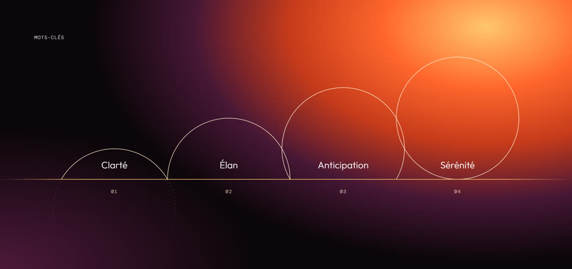

Le jour se lève.
Tout est prêt.
Aube est un assistant personnel. Ce guide rassemble tout ce qu'il faut pour le représenter juste : son idée, son logo, ses couleurs, sa typographie, ses écrans et sa façon de bouger.
Le guide en présentation
Le même guide en 23 pages au format 16:9, à projeter, à envoyer ou à imprimer.
Sommaire
Neuf chapitres. Chacun tient sur une page, avec ses règles, ses exemples et ses fichiers.
Un assistant qui travaille la nuit pour que le matin soit simple.
Aube est un assistant personnel intelligent, pensé pour celles et ceux qui mènent de front un métier et une vie. Pendant la nuit, il trie, prépare et anticipe ; au réveil, la journée est déjà en ordre.
1.1L'idée
Tout le système vient d'une seule image : le lever du jour. Elle donne le nom, la forme du logo, la couleur et le mouvement.
Tout est prêt.
Pour les titres, les ouvertures, la fin d'une vidéo.
Calme.
Prêt.
Pour l'affichage et les formats courts.
1.2Mots-clés
Quatre mots, dans l'ordre d'une matinée : on y voit clair, on prend de l'élan, on a un temps d'avance, on est tranquille.

1.3Valeurs
1.4Personnalité
Aube est calme, chaleureux et concret. Il parle comme une personne de confiance, jamais comme une machine ni comme une publicité.
1.5Ton de voix
Aube tutoie. Il fait des phrases courtes, dit ce qu'il a fait et ce qu'il propose, et s'arrête là.
Quatre règles
| On dit | On ne dit pas |
|---|
Quatre disques, un soleil dans chaque lettre.
Le logotype s'écrit « aube », en minuscules. Chaque lettre est construite sur un disque dont la moitié basse est pleine ; la contre-forme est un dôme posé sur la ligne d'horizon.
2.1Les trois versions
La version complète est la version par défaut. Le logotype seul sert quand le contexte dit déjà ce qu'est Aube. Le symbole sert en petit : icône, avatar, pied de page.
2.2Construction
Le dessin tient en cinq cotes. On ne redessine jamais le logo : on utilise les fichiers fournis.

Diamètre de chaque lettre, égal à la hauteur d'x.
Épaisseur des fûts et de l'arche.
Contre-forme posée sur l'horizon, à mi-hauteur.
Entre deux lettres. La hampe du b monte de 42.
2.3Zone de protection
Autour du logo, on laisse libre une marge égale à la moitié de la hauteur d'x (la hauteur de la moitié pleine d'une lettre). Aucun texte, aucune image, aucun bord de format n'y entre.
2.4Tailles minimales
En dessous de ces largeurs, les dômes se bouchent. On passe alors à la version plus simple.
| Version | Écran | Impression | Aperçu à la taille minimale |
|---|
2.5Couleurs du logo
Le logo est toujours d'une seule couleur : Nuit sur fond clair, Blanc sur fond sombre ou sur dégradé, Aurore sur Nuit, Nuit sur Aurore.
2.6À ne pas faire
2.7Animation
Le logo ne tombe pas, ne tourne pas, ne rebondit pas : il se lève. Une ligne d'horizon se trace, quatre disques montent, les lettres s'ouvrent.
La nuit, puis la lumière.
Huit couleurs qui racontent un lever de soleil : un fond aubergine très sombre, une braise qui monte, une aurore vive, un miel clair. Clique sur une couleur pour copier son code.
3.1Palette
Pour le texte courant sur fond clair, on utilise Encre #231A26, un Nuit légèrement adouci.
3.2Proportions
Aurore est une lumière, pas un fond de page. Sur une composition sombre, le noir et la nuit tiennent la majorité de la surface ; la couleur vive reste rare pour rester forte.
Scènes et écrans
Fond Noir ou Nuit. La lumière vient d'un seul point, en bas ou sur un côté. Texte Blanc.
Pages de texte et documents
Fond Blanc ou Brume. Texte Encre. Aurore pour un numéro, un lien, un point d'attention, jamais pour un paragraphe.
3.3Contrastes
Rapports calculés selon WCAG 2.1. AA demande 4,5 pour le texte courant et 3 pour les grands titres (24 px et plus, ou 19 px en gras).
| Aperçu | Texte | Fond | Rapport | Usage |
|---|
3.4Dégradés
Les dégradés vont toujours dans le même ordre : Noir, Prune, Braise, Aurore, Miel. Aucune autre teinte. Sur une grande surface, on ajoute un grain léger. Clique pour copier le CSS.
Une voix légère, des lettres rondes.
Outfit porte toute la marque : ses formes géométriques répondent aux disques du logo. DM Mono s'occupe des étiquettes, des codes et des numéros.
4.1Outfit
Trois graisses suffisent : Light 300 pour les titres et le texte, Regular 400 pour l'interface, Medium 500 pour les intitulés. Le texte ci-dessous est modifiable.
4.2DM Mono
Toujours petit, en capitales, avec un peu d'interlettrage. Pour dater, numéroter, étiqueter. Jamais pour une phrase.
4.3Hiérarchie
| Style | Exemple | Réglage |
|---|
4.4Règles
Si Outfit n'est pas disponible (mail, document partagé), on prend la police sans empattement du système.
Un astre, un horizon.
Deux formes suffisent à reconnaître Aube sans son logo : une sphère de verre chaude et vivante, et une grande courbe lumineuse qui monte dans le cadre.
5.1L'astre
L'astre est le visage de l'assistant : il apparaît quand Aube écoute, réfléchit ou répond. Les couleurs circulent lentement à l'intérieur du verre.
5.2L'horizon
Un très grand disque dont on ne voit que le bord, souligné d'un liseré de lumière. Il entre par le bas, comme un soleil, ou par un côté. Déplace le curseur pour le faire monter.
Calme.
Prêt.
5.3Le grain
Un grain fin recouvre les grandes surfaces de dégradé. Il évite les bandes de couleur à l'écran et donne de la matière à l'impression.
Sans grain
Avec grain
Peu de choses à l'écran, toutes utiles.
L'application ressemble à la marque : un fond de nuit, une lumière qui vient du bas, des cartes de verre et une seule action mise en avant.
6.1Principes
Une chose à la fois
Chaque écran répond à une question : que dois-je faire, où en suis-je, que me proposes-tu.
La lumière guide
La zone la plus lumineuse est celle où l'on agit : le micro, la case à cocher, la barre du jour.
La voix d'abord
Tout peut se dire. Le bouton micro est présent sur chaque écran, au même endroit.
6.2Écrans
6.3Composants
6.4Icône d'application
Le symbole blanc sur le dégradé du lever. Quatre variantes en aplat existent pour les contextes où le dégradé ne passe pas.

Tout se lève, rien ne rebondit.
Le mouvement d'Aube imite un lever de soleil : il part vite, ralentit longtemps et se pose sans bruit.
7.1Principes
Depuis l'horizon
Les éléments entrent par le bas, de quelques pixels seulement, en même temps qu'ils apparaissent.
Net, puis doux
Départ rapide, arrivée très amortie. Aucun mouvement linéaire, aucun rebond, aucune élasticité.
L'un après l'autre
Les éléments d'un groupe se suivent avec un court décalage, puis l'écran reste immobile.
7.2Durées et courbes
Clique sur une piste pour rejouer le mouvement.
7.3Exemples
La marque dans le monde.
Affichage, signalétique, papeterie, réseaux, scène : les mêmes règles partout. Clique sur une image pour l'agrandir, puis navigue avec les flèches.
8.1Galerie
8.2Règles d'application
Affichage et écrans géants
Fond sombre, un horizon, le triptyque en haut, le logo en bas. Une seule information chiffrée à la fois.
Signalétique
Logo en lettres lumineuses blanches, ou symbole Nuit sur caisson blanc. Jamais de dégradé sur une enseigne.
Papeterie
Recto en dégradé avec la version complète en blanc. Verso clair, symbole Aurore, texte Nuit.
Réseaux sociaux
Trois gabarits : la signature sur dégradé, l'astre sur fond sombre, le triptyque avec l'horizon. Avatar : symbole Aurore sur Nuit.
Les fichiers.
Tout ce qu'il faut pour produire aux couleurs d'Aube sans rien redessiner.
9.1Guide en PDF
Le guide de marque complet en présentation : couverture, sommaire, cinq chapitres, 23 pages au format 16:9.
9.2Logos
Fichiers vectoriels SVG, en quatre couleurs. Le texte de la version complète est vectorisé : aucune police à installer.
Tout télécharger (ZIP)| Version | Nuit | Blanc | Aurore | Noir |
|---|
9.3Couleurs en CSS
9.4Polices
9.5Crédits
Aube est une marque fictive, créée comme projet vitrine. Direction artistique, identité de marque et motion design : KLYRA, 2026. Structure de présentation inspirée de l'étude de cas « Jor Personal Assistant » de Typefool et Sam Miles. Matières et ciels des scènes 3D : Poly Haven (CC0).